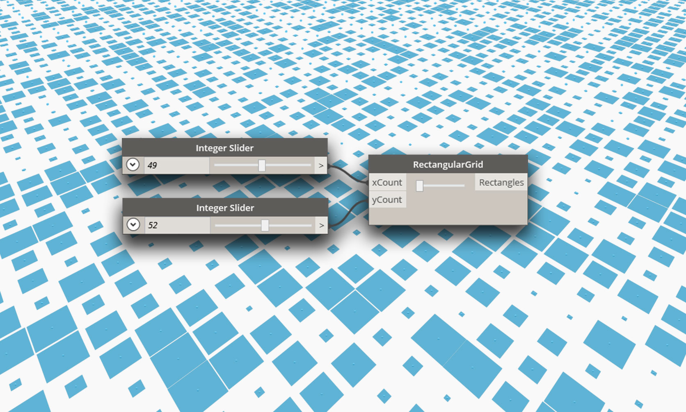
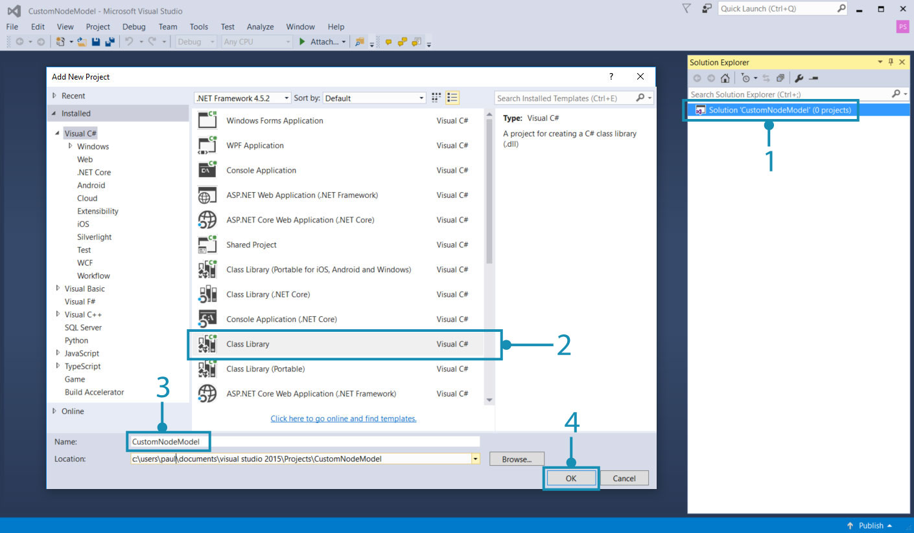
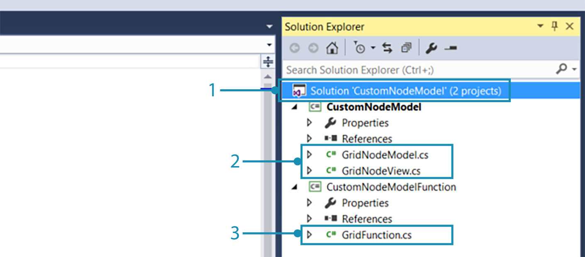
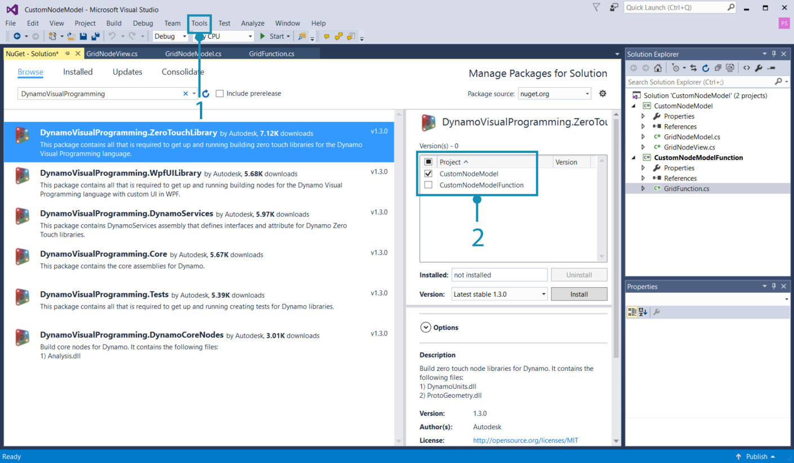
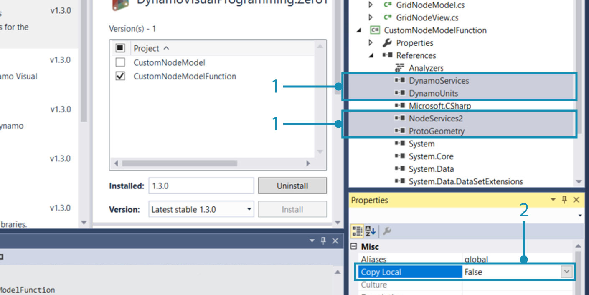
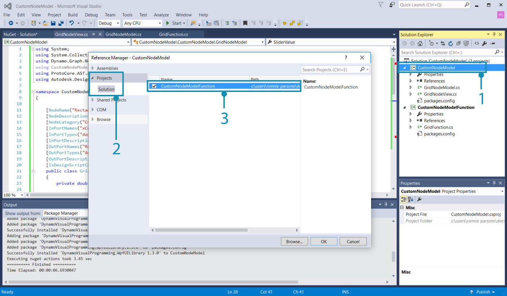
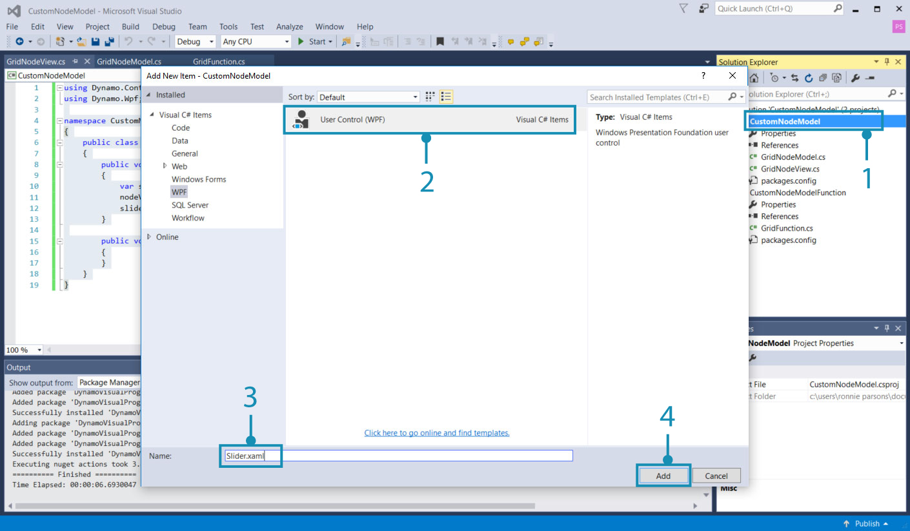
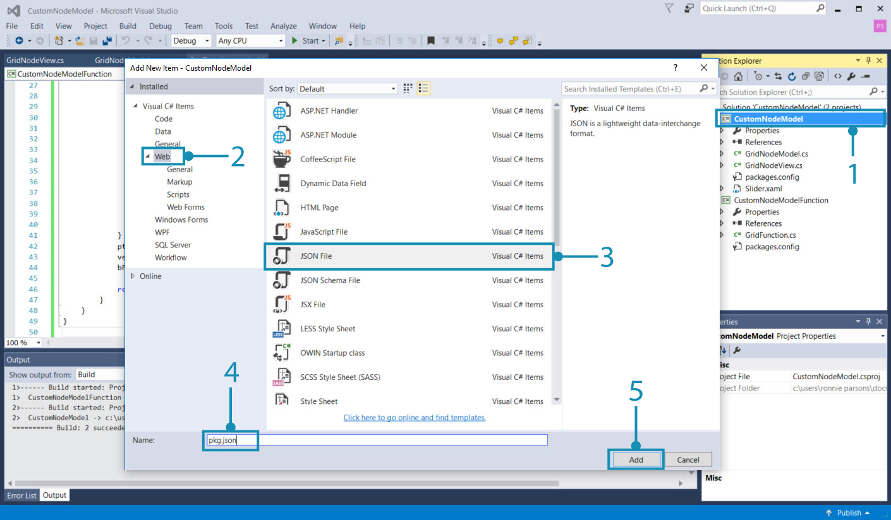

NodeModel Case Study - Custom UI
NodeModel based nodes provides significantly more flexibility and power than the Zero-Touch nodes. In this example, we will take the Zero-Touch grid node to the next level by adding an integrated slider that randomizes the rectangle size.

The slider scales the cells relative to their size so the user doesn't have to provide a slider with the correct range.
The Model-View-Viewmodel Pattern
Dynamo is based on the model-view-viewmodel (MVVM) software architecture pattern to keep the UI separate from the back-end. When creating ZeroTouch nodes, Dynamo does the data bind between a node's data and its UI . To create a custom UI, we have to add the data-binding logic.
At a high-level there are two parts to establishing a model-view relationship in Dynamo:
- A
NodeModelclass to establish the core logic of the node (the "model") - A
INodeViewCustomizationclass to customize how theNodeModelis being viewed (the "view")
NodeModel objects already have an associated view-model (NodeViewModel), so we can just focus on the model and view for custom UI.
How To Implement NodeModel
NodeModel nodes have several significant differences from Zero-Touch nodes that we will cover in this example. Before we jump into UI customization, let's start by building out the NodeModel logic.
1. Create project structure:
A NodeModel node can only call functions, so we need to separate the NodeModel and functions into different libraries. The standard way of doing this for Dynamo packages is creating separate projects for each. Start by creating a new Solution to encompass the projects.

- Select
File > New > Project- Select
Other Project Typesto bring up the Solution option- Select
Blank Solution- Name the solution
CustomNodeModel- Select
Ok
Create two C# class library projects in the solution: one for functions and one to implement the NodeModel interface.

- Right-click on the Solution and select
Add > New Project- Choose Class Library
- Name it
CustomNodeModel- Click
Ok- Repeat the process to add another project named
CustomNodeModelFunctions
Next, we need to rename the class libraries that were automatically created and add one to the CustomNodeModel project. The class GridNodeModel implements the abstract NodeModel class, GridNodeView is used to customize the view, and GridFunction contains any functions we need to call.

- Add another class by right-clicking on the
CustomNodeModelproject, selectingAdd > New Item...and chooseClass.- In the
CustomNodeModelproject, we needGridNodeModel.csandGridNodeView.csclass- In the
CustomNodeModelFunctionproject, we need aGridFunctions.csclass
Before we add any code to the classes, add the necessary packages for this project. CustomNodeModel will need ZeroTouchLibrary and WpfUILibrary, and CustomNodeModelFunction will only need ZeroTouchLibrary. The WpfUILibrary will be used in the UI customization we do later on, and ZeroTouchLibrary will be used for creating geometry. Packages can be added individually for projects. Since these packages have dependencies, Core and DynamoServices will be automatically installed.

- Right-click on a project and select
Manage NuGet Packages- Install only the required packages for that project
Visual Studio will copy the NuGet packages we referenced to the build directory. This can be set to false so we don't have any unnecessary files in the package.

- Select Dynamo NuGet Packages
- Set
Copy Localto false
2. Inherit the NodeModel class
As mentioned previously, the primary aspect that makes a NodeModel node different from a ZeroTouch node is its implementation of the NodeModel class. A NodeModel node needs several functions from this class, and we can get them by adding :NodeModel after the class name.
Copy the following code into the GridNodeModel.cs.
using System;
using System.Collections.Generic;
using Dynamo.Graph.Nodes;
using CustomNodeModel.CustomNodeModelFunction;
using ProtoCore.AST.AssociativeAST;
using Autodesk.DesignScript.Geometry;
namespace CustomNodeModel.CustomNodeModel
{
[NodeName("RectangularGrid")]
[NodeDescription("An example NodeModel node that creates a rectangular grid. The slider randomly scales the cells.")]
[NodeCategory("CustomNodeModel")]
[InPortNames("xCount", "yCount")]
[InPortTypes("double", "double")]
[InPortDescriptions("Number of cells in the X direction", "Number of cells in the Y direction")]
[OutPortNames("Rectangles")]
[OutPortTypes("Autodesk.DesignScript.Geometry.Rectangle[]")]
[OutPortDescriptions("A list of rectangles")]
[IsDesignScriptCompatible]
public class GridNodeModel : NodeModel
{
private double _sliderValue;
public double SliderValue
{
get { return _sliderValue; }
set
{
_sliderValue = value;
RaisePropertyChanged("SliderValue");
OnNodeModified(false);
}
}
public GridNodeModel()
{
RegisterAllPorts();
}
public override IEnumerable<AssociativeNode> BuildOutputAst(List<AssociativeNode> inputAstNodes)
{
if (!HasConnectedInput(0) || !HasConnectedInput(1))
{
return new[] { AstFactory.BuildAssignment(GetAstIdentifierForOutputIndex(0), AstFactory.BuildNullNode()) };
}
var sliderValue = AstFactory.BuildDoubleNode(SliderValue);
var functionCall =
AstFactory.BuildFunctionCall(
new Func<int, int, double, List<Rectangle>>(GridFunction.RectangularGrid),
new List<AssociativeNode> { inputAstNodes[0], inputAstNodes[1], sliderValue });
return new[] { AstFactory.BuildAssignment(GetAstIdentifierForOutputIndex(0), functionCall) };
}
}
}
This different from Zero-Touch nodes. Let's understand what each part is doing.
Specify the Node attributes like Name, Category, InPort/OutPort names, InPort/OutPort types, descriptions.
public class GridNodeModel : NodeModelis a class that inherits theNodeModelclass fromDynamo.Graph.Nodes.public GridNodeModel() { RegisterAllPorts(); }is a constructor that registers the node inputs and outputs.BuildOutputAst()returns an AST (Abstract Syntax Tree), the required structure for returning data from a NodeModel node.AstFactory.BuildFunctionCall()calls the RectangularGrid function fromGridFunctions.cs.new Func<int, int, double, List<Rectangle>>(GridFunction.RectangularGrid)specifies the function and its parameters .new List<AssociativeNode> { inputAstNodes[0], inputAstNodes[1], sliderValue });maps the node inputs to function parametersAstFactory.BuildNullNode()builds a null node if the input ports are not connected. This is to avoid displaying a warning on the node.RaisePropertyChanged("SliderValue")Notifies the UI when the slider value changesvar sliderValue = AstFactory.BuildDoubleNode(SliderValue)Build a node in the AST that represents the slider valueChange an input to the
sliderValuevariable in the functionCall variablenew List<AssociativeNode> { inputAstNodes[0], sliderValue });
3. Call a function
The CustomNodeModelFunction project will be built into a separate assembly from CustomNodeModel so that it can be called.
Copy the following code into GridFunction.cs.
using Autodesk.DesignScript.Geometry;
using Autodesk.DesignScript.Runtime;
using System;
using System.Collections.Generic;
namespace CustomNodeModel.CustomNodeModelFunction
{
[IsVisibleInDynamoLibrary(false)]
public class GridFunction
{
[IsVisibleInDynamoLibrary(false)]
public static List<Rectangle> RectangularGrid(int xCount = 10, int yCount = 10, double rand = 1)
{
double x = 0;
double y = 0;
Point pt = null;
Vector vec = null;
Plane bP = null;
Random rnd = new Random(2);
var pList = new List<Rectangle>();
for (int i = 0; i < xCount; i++)
{
y++;
x = 0;
for (int j = 0; j < yCount; j++)
{
double rNum = rnd.NextDouble();
double scale = rNum * (1 - rand) + rand;
x++;
pt = Point.ByCoordinates(x, y);
vec = Vector.ZAxis();
bP = Plane.ByOriginNormal(pt, vec);
Rectangle rect = Rectangle.ByWidthLength(bP, scale, scale);
pList.Add(rect);
}
}
pt.Dispose();
vec.Dispose();
bP.Dispose();
return pList;
}
}
}
This function class is very similar to the Zero-Touch Grid case study with one difference:
[IsVisibleInDynamoLibrary(false)]prevents Dynamo from "seeing" the following method and class since the function is already being called fromCustomNodeModel.
Just as we added references for NuGet packages, CustomNodeModel will need to reference CustomNodeModelFunction to call the function.

The using statement for CustomNodeModel will be inactive until we reference the function
- Right-click on
CustomNodeModeland selectAdd > Reference- Choose
Projects > Solution- Check
CustomNodeModelFunction- Click
Ok
4. Customize the view
To create a slider, we need to customize the UI by implementing the INodeViewCustomization interface.
Copy the following code into GridNodeView.cs
using Dynamo.Controls;
using Dynamo.Wpf;
namespace CustomNodeModel.CustomNodeModel
{
public class CustomNodeModelView : INodeViewCustomization<GridNodeModel>
{
public void CustomizeView(GridNodeModel model, NodeView nodeView)
{
var slider = new Slider();
nodeView.inputGrid.Children.Add(slider);
slider.DataContext = model;
}
public void Dispose()
{
}
}
}
public class CustomNodeModelView : INodeViewCustomization<GridNodeModel>defines the necessary functions to customize the UI.
After the structure of the project is set up, use Visual Studio's design environment to build a user control and define its parameters in an .xaml file. From the tool box, add a slider to <Grid>...</Grid>.

- Right click on
CustomNodeModeland selectAdd > New Item- Select
WPF- Name the user control
Slider- Click
Add
Copy the following code into Slider.xaml
<UserControl x:Class="CustomNodeModel.CustomNodeModel.Slider"
xmlns="http://schemas.microsoft.com/winfx/2006/xaml/presentation"
xmlns:x="http://schemas.microsoft.com/winfx/2006/xaml"
xmlns:mc="http://schemas.openxmlformats.org/markup-compatibility/2006"
xmlns:d="http://schemas.microsoft.com/expression/blend/2008"
xmlns:local="clr-namespace:CustomNodeModel.CustomNodeModel"
mc:Ignorable="d"
d:DesignHeight="75" d:DesignWidth="100">
<Grid Margin="10">
<Slider Grid.Row="0" Width="80" Minimum="0" Maximum="1" IsSnapToTickEnabled="True" TickFrequency="0.01" Value="{Binding SliderValue}"/>
</Grid>
</UserControl>
The parameters of the slider control is defined in In the
.xamlfile. Minimum and Maximum attributes defines the the numerical range of this slider.Inside
<Grid>...</Grid>we can place different user controls from the Visual Studio Toolbox
When we created the Slider.xaml file, Visual Studio automatically created a C# file called Slider.xaml.cs that initializes the slider. Change the namespace in this file.
using System.Windows.Controls;
namespace CustomNodeModel.CustomNodeModel
{
/// <summary>
/// Interaction logic for Slider.xaml
/// </summary>
public partial class Slider : UserControl
{
public Slider()
{
InitializeComponent();
}
}
}
- The namespace should be
CustomNodeModel.CustomNodeModel
The GridNodeModel.cs, defines the slider computation logic.
5. Configure as a package
Before we build the project, the final step is to add a pkg.json file so that Dynamo can read the package.

- Right-click on
CustomNodeModeland selectAdd > New Item- Select
Web- Select
JSON File- Name the file
pkg.json- Click
Add
- Copy the following code into
pkg.json
{
"license": "MIT",
"file_hash": null,
"name": "CustomNodeModel",
"version": "1.0.0",
"description": "Sample node",
"group": "CustomNodes",
"keywords": [ "grid", "random" ],
"dependencies": [],
"contents": "Sample node",
"engine_version": "1.3.0",
"engine": "dynamo",
"engine_metadata": "",
"site_url": "",
"repository_url": "",
"contains_binaries": true,
"node_libraries": [
"CustomNodeModel, Version=1.0.0, Culture=neutral, PublicKeyToken=null",
"CustomNodeModelFunction, Version=1.0.0, Culture=neutral, PublicKeyToken=null"
]
}
"name":determines the name of the package and its group in the Dynamo Library"keywords":provide search terms for searching the Dynamo Library"node_libraries": []the libraries associated with the packageThe last step is to build the solution and publish as a Dynamo package. Please see the Package Deployment chapter for how to create a local package before publishing online and how to build a package right out of Visual Studio.